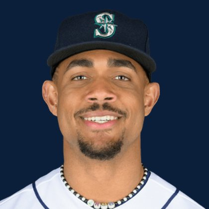

BASE KEEP
The Keep · The Diamond · The Farm
Player File · OF SEA

Julio Rodríguez
#44 · OF · Seattle Mariners · age 25 · B/T RR · 6' 4" / 228 lbs · MLB debut 2022 · Loma de Cabrera, Dominican Republic
Keep avg19.22
# Boards23
BK Value7,023
Spread12-30
Hitting
| Year | G | AB | R | H | 2B | HR | RBI | SB | BB | SO | AVG | OBP | SLG | OPS |
|---|---|---|---|---|---|---|---|---|---|---|---|---|---|---|
| 2026 | 116 | 454 | 58 | 115 | 18 | 19 | 53 | 16 | 40 | 106 | .253 | .318 | .419 | .737 |
| 2025 | 160 | 652 | 106 | 174 | 31 | 32 | 95 | 30 | 44 | 152 | .267 | .324 | .474 | .798 |
The Keep#19BK 7,023
The Lineup#14BK 7,624
The Diamond#19BK 7,023
The 2026 line
Keep #19 · avg 19.22 · 23 boards · .253 / 19 HR / 16 SB / .737 OPS
Baseball Savant
Starcast · spray · pitch
Percentile ranks (Starcast) plus the official Savant spray chart for bats and pitch chart for arms. Open the full Baseball Savant page.
Batter · 2026
xwOBA
84
xBA
83
xSLG
82
xISO
73
xOBP
67
Barrels
74
Barrel %
58
EV
65
Max EV
95
Hard Hit %
62
K %
50
BB %
36
Whiff %
36
Chase %
6
Speed
87
Arm
92
OAA
30
Bat Speed
95
Squared Up
11
Swing Len
87
Hits spray chart
Board graph
Spread 12-30 · 23 sources
Every Board
Spread 12-30 · 23 sources
| Source | Rank |
|---|---|
| FantasyPros Dynasty ECR | 12 |
| Razzball | 14 |
| RotoWire | 14 |
| FanGraphs The Board | 14 |
| Enos Slaughter | 14 |
| RotoGraphs Model | 17 |
| The Athletic | 17 |
| ESPN | 19 |
| CBS Sports | 19 |
| NFBC ADP | 19 |
| Ottoneu | 19 |
| Mastersball | 19 |
| Yahoo Fantasy | 19 |
| ATC ROS | 19 |
| Fantasy Baseballers | 20 |
| Baseball Prospectus | 22 |
| Dynasty League Baseball | 22 |
| The Dynasty Dugout | 22 |
| Baseball America | 22 |
| MLB Pipeline mix | 22 |
| Four-Seam Fantasy | 22 |
| Pitcher List | 25 |
| TDG Points | 30 |
BK News
All players · The Keep · The Farm · The Diamond · BK News · The Lineup · Pitchers · Calculator